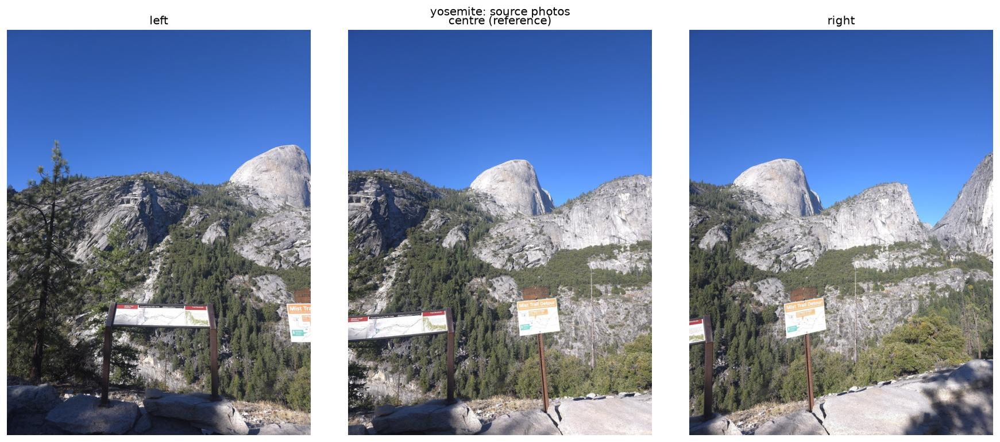
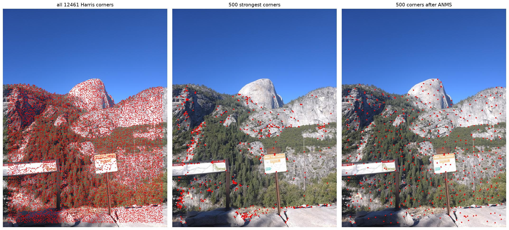
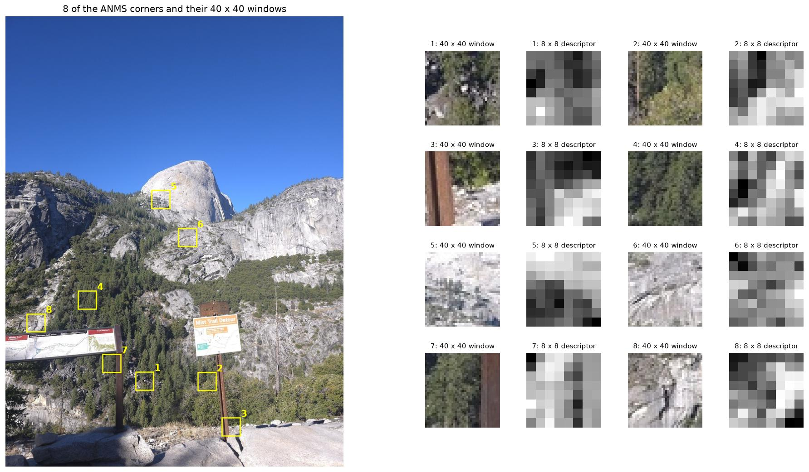
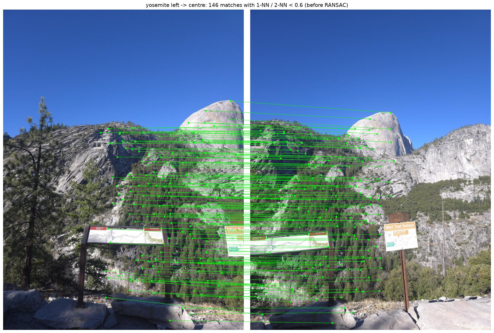
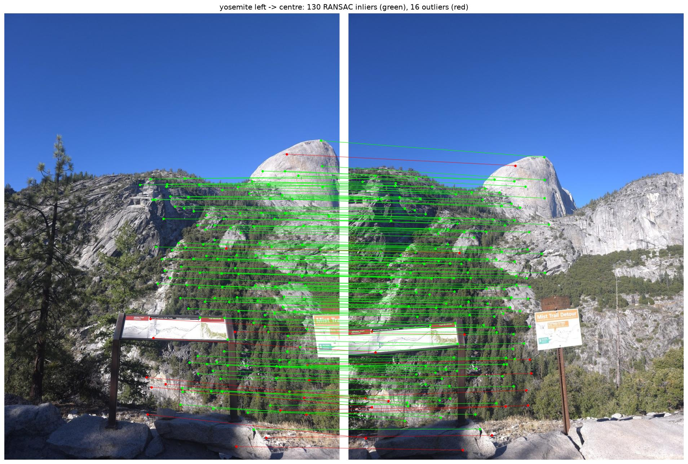
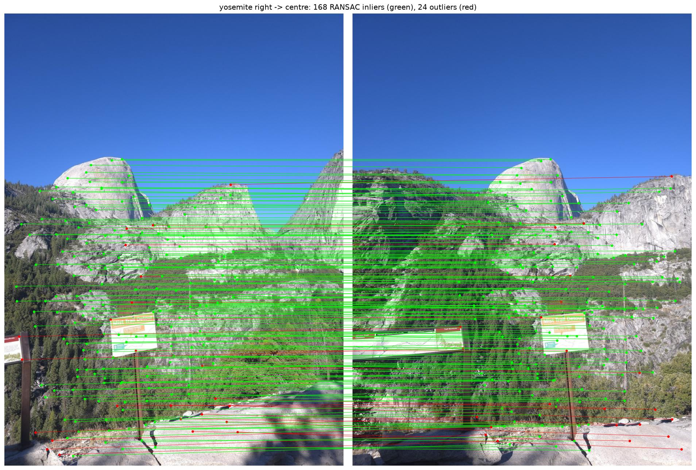
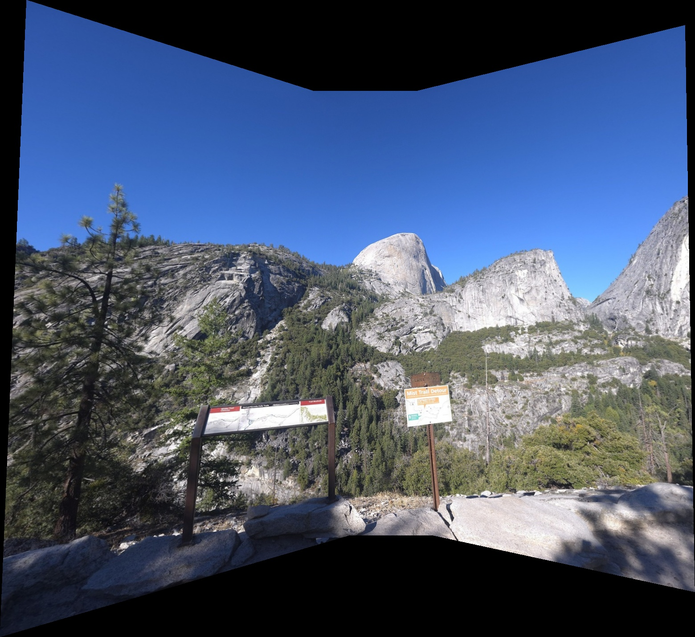
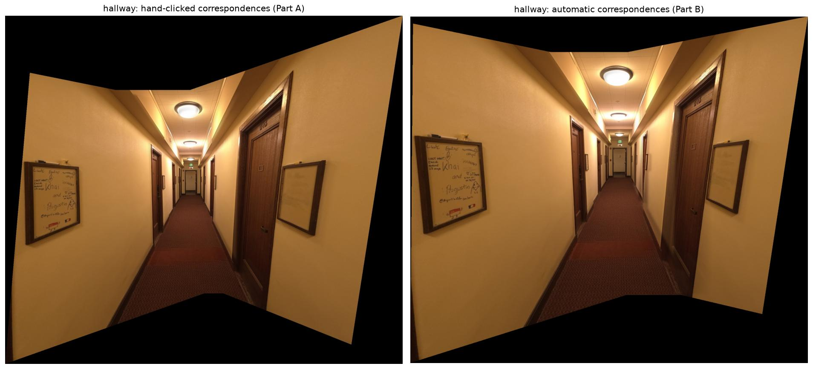
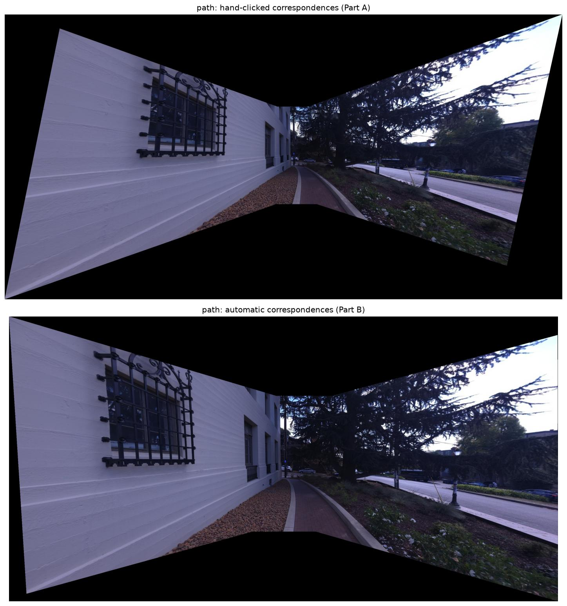

Project 4B · CS180, Fall 2026 · Tan Ee Khai
The hand-clicked correspondences from Part A are replaced with automatic corner detection, feature matching and RANSAC, following "Multi-Image Matching using Multi-Scale Oriented Patches" by Brown et al. with the simplifications from the project page. The hallway and path from Part A are stitched automatically and compared with the hand-clicked mosaics. A new set of photos from Yosemite is also stitched, which were too hard to hand-label because of the number of lines and features in the mountains.
As in Part A, every photo is downscaled so that its long side is 1000 pixels. The Harris response follows the course's harris.py, and everything else is written with NumPy, reusing the Part A homography solver, bilinear warp and two-level blend.

Corners within 20 pixels of the border are dropped, because the descriptor needs a 40 × 40 window, and so are corners weaker than 0.1 % of the strongest one, which removes the noise in the plain sky. ANMS gives each corner a radius ri, the distance to the nearest corner that is clearly stronger (crobust = 0.9), and keeps the 500 corners with the largest radii. This spreads them over the whole photo instead of crowding them onto the highest-contrast regions.

The photo is blurred with a Gaussian of σ = 2, and every fifth pixel of the 40 × 40 window around each corner is kept, which gives an 8 × 8 patch. Each patch is bias/gain normalised by subtracting its mean and dividing by its standard deviation, and its 64 values are the descriptor.

Each descriptor is matched to its nearest neighbour (1-NN) in the other photo, and the match is kept only if the ratio of the 1-NN to the 2-NN distance is below 0.6 (Lowe's ratio test). On squared distances, the quantity in Figure 6b of the paper, this is a threshold of 0.36, where correct matches are still common and incorrect ones are rare.

4-point RANSAC was implemented from scratch. 4 random matches give an exact homography through computeH from Part A, and the inliers are the matches that it sends within ε = 2 pixels of their partner. After 3,000 iterations, the homography is refit with least squares on the largest inlier set. The mosaics use the Part A canvas and two-level blend, with the centre photo as the reference.



Both versions line up in both scenes. When my clicked points are sent through the automatic homographies, they land within about 1 to 3 pixels of their clicked partners. The courtyard from Part A is not stitched automatically. Its side photos are rotated by about 23 degrees relative to the centre one, so the axis-aligned descriptors match too few corners, and RANSAC finds only 7 and 8 inliers.


Part B is in proj4b_autostitch.ipynb, which reuses the Part A functions from proj4a_rectify.ipynb.